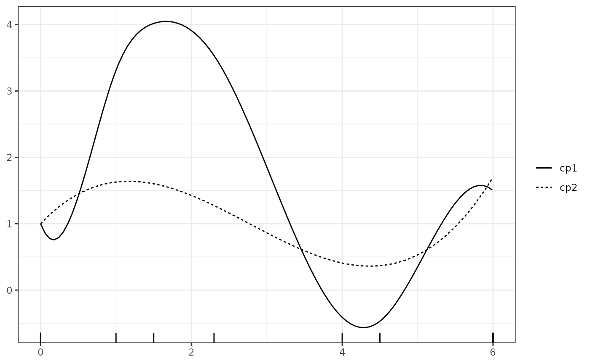

Calculate the integral of the squared second derivative of the spline function.
Value
Same as integrate.
Details
The wiggliness of the spline function is defined as
$$\int \left( \frac{\mathrm{d}^2}{\mathrm{d}x^2} f \left(x \right) \right)^2 \mathrm{d}x.$$
Examples
xvec <- seq(0, 6, length = 500)
# Define the basis matrix
bmat1 <- bsplines(x = xvec, iknots = c(1, 1.5, 2.3, 4, 4.5))
#> Warning: At least one x value >= max(bknots)
bmat2 <- bsplines(x = xvec)
#> Warning: At least one x value >= max(bknots)
# Define the control vertices ordinates
theta1 <- c(1, 0, 3.5, 4.2, 3.7, -0.5, -0.7, 2, 1.5)
theta2 <- c(1, 3.4, -2, 1.7)
# build the two control polygons
cp1 <- cp(bmat1, theta1)
cp2 <- cp(bmat2, theta2)
plot(cp1, cp2, show_cp = FALSE, show_spline = TRUE)
#> Warning: Removed 21 rows containing missing values or values outside the scale range
#> (`geom_rug()`).

wiggle(cp1)
#> 152.7839 with absolute error < 0.0049
wiggle(cp2)
#> 4.037222 with absolute error < 4.5e-14